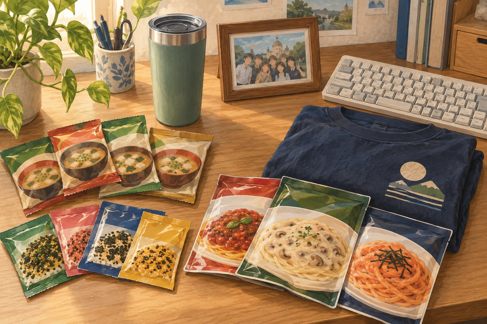
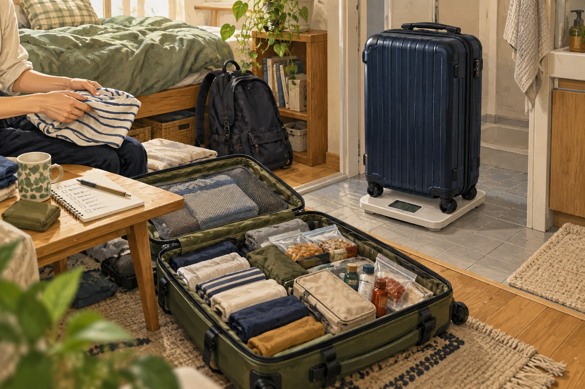

ハンガリー渡航時に「日本から持ってきて本気で良かったもの／いらなかったもの」リアルなパッキング事情【デブレツェン大学CS専攻】
みなさん、こんにちは。ハンガリー留学ラボのユウゴです！
留学の準備を進める中で、誰もが一度は頭を抱えるのが「パッキング（荷造り）」ですよね。
「海外のスーパーで日本のものは買えるのかな？」 「スーツケースの重量制限に収まるかな…？」 「CS（コンピュータサイエンス）専攻なら何を持っていくべき？」
今回は、僕が実際にハンガリー・デブレツェンで生活する中で感じた「本気で持ってきて良かった神アイテム」から「正直現地調達で十分だったもの」、さらにはパッキングのコツまで、現役生の視点からリアルにお届けします！
1. 本気で持ってきて良かった！「神アイテム」リスト
まずは、僕が一時帰国のたびにスーツケースに詰め込んで持ち帰っている「本当に助かったもの」から紹介します。
① 即席の日本食・調味料
長期間の海外生活になると、どうしても日本の味が恋しくなります。そんな時に大活躍するのが「お湯を注ぐだけ・混ぜるだけ」の食品です。
- ふりかけ
- パスタソース（和風・明太子など）
- めんつゆ
- インスタントのお味噌汁
疲れて帰ってきた日やテスト期間中に、サッと作れて日本の味を補給できる即席系は本当に最高です。
② 保温タンブラー
毎日図書館や家で勉強する時に大重宝しています。温かい飲み物や冷たい飲み物を長時間キープできるので、勉強のお供として欠かせない相棒です。
③ 「思い出の品」（メンタル面で超重要！）
これ、意外とバカにできません！僕の場合は「高校の時のクラスTシャツ」「友人との集合写真」「好きなアイドルの写真」などを持っていきました。 留学中、どうしてもホームシックになったり、テスト前で精神的にしんどくなったりした時に、自分の部屋に飾ってある写真や思い出の品を見ると本当に精神的に救われます。

④ CS専攻ならではのガジェット類
- キーボード
- 海外の電圧に対応した延長コード
- PC用スピーカー
これらは絶対日本で買って持ってくるのがおすすめです！ハンガリー現地で買うと日本よりかなり割高になりますし、何よりキーボードを買うと「ハンガリー語配列」になっていて打ちづらいというトラップがあります（笑）。
2. 正直いらなかった・現地調達でOKだったもの
逆に「気合を入れて持ってきたけど、わざわざ日本から持ってこなくてもよかったな」と思ったものです。
- タオル類
- お醤油
- お米
- シャンプー・リンス
もちろん現地で買うと日本よりは少し割高にはなりますが、お醤油や普通のお米、タオル類はハンガリーのスーパー（SparやLidlなど）でも比較的安く手に入ります。シャンプー類も特定のブランドに強いこだわりがなければ現地調達で全く問題ありません。
ただし、昨今の円安の影響もあるので「基本的には日本で買えるものはできる限り持ってくる」というスタンスが一番お財布には優しいかなと思います！
3. 「もっと持ってくればよかった…！」と後悔したもの
ちなみに僕の場合、渡航時はスーツケース2つとリュックをパンパンにして行ったのですが、それでも後から「もっと持ってくればよかった！」と思ったのは日本のお菓子です。
勉強の合間にちょっとつまむ日本のチョコやスナック菓子は、やっぱり現地のものとは違った安心感があります。「調味料やお菓子は、どれだけ持っていっても困らない！」というのが正直な感想です（笑）。
4. 現役生が教える！失敗しないパッキングのコツ
僕が渡航時に毎回利用している「中国東方航空」は、受託手荷物（23kgまでのスーツケース）が2つと、機内持ち込み用の手荷物（リュックなど）が無料でついてきます。
荷造りをする時のコツをいくつかまとめました！
コツ①：数日前までパッキングは始めない！
渡航直前になって焦らないよう、まずはメモ帳などに「すでに買ったもの」「まだ足りないもの」をリスト化して記録・管理することから始めましょう。実際のパッキング作業自体は、数日前から一気に優先順位の高いもの（絶対に忘れられない貴重品やガジェット、薬など）から詰めていけばOKです。
コツ②：重量オーバーに注意（詰め込みは気合！）
調味料や液体類、本などの重いものを最初に入れると「スペース的にはまだまだ入るのに、重さ制限（23kg）をオーバーしてしまう」ということがよく起こります。体重計などを使いながら重さをこまめに測りましょう。スペースへの詰め込み自体は気合です！（笑）

最後に：渡航を控えているみなさんへ
色々書きましたが、基本的に「大抵のものはハンガリー現地でも買える」ので安心してください！スーパーで食材を買って自炊すれば、日本に近い食事を作ることも十分可能です。
あまり難しく考えすぎず、「絶対に持っていきたいお気に入りのもの」と「優先順位の高い必需品」をしっかりスーツケースに詰めて、ワクワクした気持ちで新生活を迎えてくださいね！